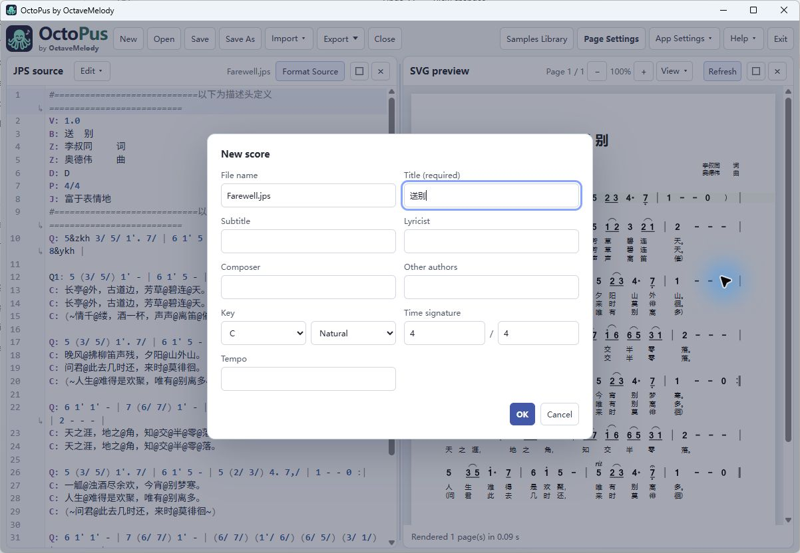
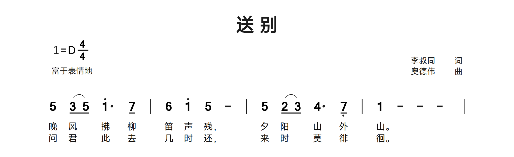
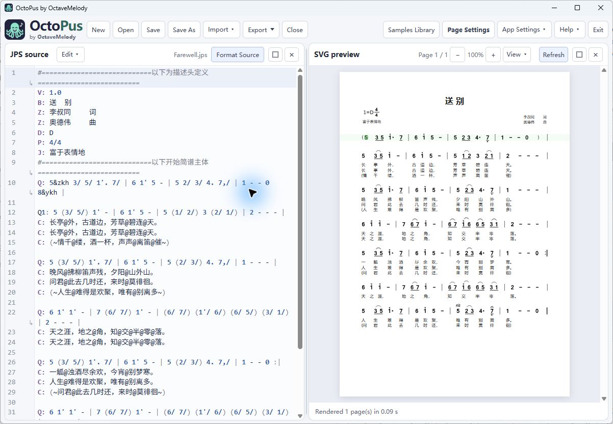

1. Introduction
OctoPus (Octave + Jianpu) is a desktop editor for numbered music notation. Write a score in JPS (Jianpu Script), review its live SVG preview, compare it with an original image or PDF, and export finished pages. A .jps file holds the music; page settings control its presentation. Find the installed version in the About dialog. This guide was updated 1 November 2026.
After installation, editing, rendering and supported transcription run locally. Help links open in the system's default browser, and update checks need a network connection. The manual is available offline in English and Chinese, with matching topics and examples. Use the language link on each topic page or download the PDF you need.
Application screenshots show the Windows interface. Menu labels and system fonts may differ on macOS and Linux.
Install and start OctoPus
Download a release package from the official OctoPus Releases page and choose the package for your operating system. Packages include the examples and offline documentation. After installation, scores, rendering and transcription work offline; update checks need a connection.
| Platform | Install and launch |
|---|---|
| Windows | Run the setup executable and follow its prompts, or extract the portable ZIP and launch octopus.exe. Keep the portable folder together. Windows requires WebView2, which is already present on most systems. |
| macOS 26 or later (Apple Silicon) | Open the DMG and drag OctoPus to Applications, then launch it there. The current desktop package may be unsigned and not notarized, so Gatekeeper may block launch. See the Quick Start's macOS steps for the current release instructions. |
| Linux | For an AppImage, make the downloaded file executable and run it. Keep the entire portable folder together if using a portable build. Linux needs GTK/WebKit runtime libraries and Poppler tools. |
Help → Quick Start includes a screenshot-led first score walkthrough after the app opens.
2. Capabilities, limits and roadmap
| Available now | Scope |
|---|---|
| JPS editing | New/open/save, undo/redo, clipboard, find/replace, source formatting and bundled samples. |
| Live SVG preview | Source/score correspondence, page navigation, zoom and page layout controls. |
| Reference transcription | PNG/JPG/JPEG/PDF input, original display and provisional JPS drafts for review. |
| Export | SVG, PDF, PNG and JPEG; locally packaged worker and platform-specific score-font handling. |
| Languages | English/Chinese interface and user manual. |
Current limits. Transcription may miss parts of a score. Check notes, accidentals, octave dots, durations, lyrics, slurs, grace notes, endings and page order. Filtering for repeated running headers, footers and page numbers is conservative, so unusual layouts and spans across pages need review. The desktop app has no playback/MIDI workflow, LilyPond exporter or MusicXML import/export UI. Staff-notation recognition is planned; it is not a supported replacement for Jianpu input. Updates are not installed automatically. macOS desktop packages support Apple Silicon on macOS 26 or later; Windows/macOS host acceptance is separate from Linux testing.
Planned features
- Improve transcription quality, including difficult marks and repeated page furniture.
- Export LilyPond source and import or export MusicXML.
- Export MIDI.
- Import staff-notation sheet music and recognize it as JPS.
- These are plans, not current features; no release dates are set.
3. Your first score
- Start OctoPus and choose New. Enter a title, choose the basic score fields and confirm. Time-signature values are positive integers; compound meters such as 12/8 are supported.
- Replace the source with the example below, or use Open to load a bundled example from the portable examples directory.
- Wait for the SVG preview to finish rendering. Click a note to locate its source; edit the text and review the result.
- Use Page Settings for margins/fonts, Save As for a .jps file, then Export for the finished score.

V: 1.0
B: First score
Z: Practice example
D: C
P: 4/4
J: 90
Q: 1 2 3 4 | 5 6 7 1' ||
C: 春 风 吹 来 花 儿 开 了This example has two four-note bars; the final note is one octave above the base register. The eight Chinese lyric characters map to the eight notes.
Learn from a library score
Choose Open and select Farewell.jps from the portable examples directory, or download the excerpt below. Read the header and find the row beginning Q: 5 (3/ 5/). Place the source cursor on 1'. and inspect the dotted high note in the preview. Change only the dot, compare the result, then Undo. In a copied lyric row, move an @ and see which note loses its syllable. Use Save As before keeping your experiments. Downloadable excerpts include the original header, even when the page shows only body lines.
A melody with two lyric verses
Open Farewell from the portable examples directory, or download the excerpt below. This excerpt is its second sung row. Compare the four barlines, the dotted high 1, the lower 7, and the two lyric lines. Download the excerpt to try the same passage without the rest of the score.
bundled examples: Farewell.jps · source lines 17-19. Excerpt rendered with the Linux package font set; blank page space omitted. Download this JPS excerpt
JPS source
Q: 5 (3/ 5/) 1'. 7/ | 6 1' 5 - | 5 (2/ 3/) 4. 7,/ | 1 - - - |
C: 晚风@拂柳笛声残，夕阳@山外山。
C: 问君@此去几时还，来时@莫徘徊。
4. The workspace and UI
The top row contains New, Open, Save, Save As, Import, Export, Close, Help, Page Settings, App Settings and Exit. App Settings groups the N1/N2 Normal and T1/T2 Transcription layouts with sample-library visibility, interface language and UI-font choices. On first use, the interface defaults to Simplified Chinese and the platform font; OctoPus saves later choices. The menu marks each platform's default UI font: Microsoft YaHei on Windows, PingFang SC on macOS and bundled Noto Sans SC on Linux. The alternatives are SimSun, Songti SC and bundled Liberation Sans, respectively. UI fonts affect controls and menus; Page Settings controls score and export font roles.

Import offers a single JPG / PNG / PDF action. Transcription uses the bundled Default OCR profile. The logo and brand name open the project home. Each panel has Maximize/Restore and Close controls; drag a border between panels to resize them.
| Pane | Purpose |
|---|---|
| JPS source | Edit text. The filename and Unsaved status appear just before the right-aligned Format Source button. Editing actions sit beside the JPS source heading. |
| SVG preview | Rendered score, fit/zoom/page controls and render diagnostics. |
| Original Image/PDF | Reference page, fit/zoom/rotate controls and Transcribe menu; visible in Transcription mode. |
In a narrow pane, view controls move into a View menu and source tools into Edit. SVG View includes Fit Page, Fit Width, Prev Page and Next Page; Original View includes fit and rotation, plus PDF page navigation when applicable. Very narrow panes also provide zoom through View. These controls stay on the pane's heading row.
5. Files, saving and recovery
Open loads a .jps score. If you edit the score or page settings while another file is loading, OctoPus keeps your changes and asks you to retry. It supports plain JPS text and compatible JSON-wrapped JPS documents; a wrapper may contain source, page settings and existing metadata. Save writes the current document. A new document needs a destination first, while Save As changes the destination. To preserve page settings from a plain-text score, you may need to save it in a wrapper; follow the dialog prompt.
Close closes the score; Exit closes the application. If changes are unsaved, choose Save, Discard or Cancel. After an interruption, recovery can restore the last recoverable draft and managed references, but it does not replace regular backups. Reference images and PDFs are separate from the score source, so keep their original files. Opening a sample creates a working document; choose your own save location before overwriting anything.
Use Open to reopen a saved score or a bundled example. Examples are provided in the portable examples directory; downloadable excerpts in this manual can also be opened directly.
6. Editing JPS source
Use Undo/Redo, Cut/Copy/Paste, Find, Replace and Select All from the heading or compact Edit menu. Find opens the search UI; Replace exposes replacement controls. Standard editor keyboard shortcuts remain available. Clipboard availability depends on the operating system. Format Source spaces musical tokens while retaining notation content; it cannot repair musical mistakes or validate a transcription. Quoted annotations and attached grace groups need careful review after edits.
Manually selecting JPS text shows a blue selection, which becomes muted when the editor loses focus. Clicking a preview note marks its corresponding source note in green.
Prefer ASCII punctuation for syntax: colon :, quote ", comma , apostrophe ' and slash /. Use full-line # comments to explain the source. Do not paste curly quotes or a full-width colon as syntax. Keep attached modifiers next to their note. Preserve a copy before a large replacement and use Undo when needed.
Syntax checks appear while you type: gutter symbols and underlined source ranges mark errors or warnings. Select a gutter marker to jump to its range. A small ↳ marks a wrapped continuation of the same source line, not a new music row. Formatting applies only to valid music prefixes with a colon; descriptive text such as “Queen: some value” keeps its spaces.